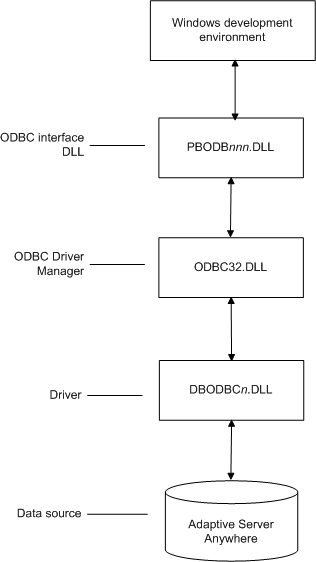
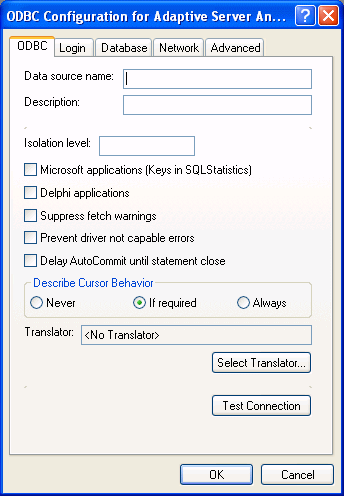

Preparing to use the ASA data source
Before you define and connect to an ASA data source in PowerBuilder, follow these steps to prepare the data source.
 To prepare an ASA data source:
To prepare an ASA data source:
Make sure the database file for the ASA data source already exists. You can create a new database by:
- Launching the Create ASA Database
utility. You can access this utility from the Utilities folder for
the ODBC interface in the Database profile or Database painter when PowerBuilder is running
on your computer.
This method creates a local ASA database on your computer, and also creates the data source definition and database profile for this connection. (For instructions, see the User's Guide .) - Creating the database some other way, such as with PowerBuilder running on another user's computer or by using ASA outside PowerBuilder. (For instructions, see the ASA documentation.)
- Launching the Create ASA Database
utility. You can access this utility from the Utilities folder for
the ODBC interface in the Database profile or Database painter when PowerBuilder is running
on your computer.
Make sure you have the log file associated with the ASA database so that you can fully recover the database if it becomes corrupted.
If the log file for the ASA database does not exist, the ASA database engine creates it. However, if you are copying or moving a database from another computer or directory, you should copy or move the log file with it.
Defining the ASA data source
When you create a local ASA database, PowerBuilder automatically creates the data source definition and database profile for you. Therefore, you need only use the following procedure to define an ASA data source when you want to access an ASA database not created using PowerBuilder on your computer.
 To define an ASA data source for the ASA driver:
To define an ASA data source for the ASA driver:
Select Create ODBC Data Source from the list of ODBC utilities in the Database Profiles dialog box or the Database painter.
Select User Data Source and click Next.
On the Create New Data Source page, select the ASA driver and click Finish.
The ODBC Configuration for ASA dialog box displays:

You must supply the following values:
- Data source name on the ODBC tab page
- User ID and password on the Login tab page
- Database file on the Database tab page
Use the Help button to get information about fields in the dialog box.
(Optional) To select an ODBC translator to translate your data from one character set to another, click the Select button on the ODBC tab.
Click OK to save the data source definition.
Specifying a Start Line value
When the ASA ODBC driver cannot find a running personal or network database server using the PATH variable and Database Name setting, it uses the commands specified in the Start Line field to start the database servers.
Specify one of the following commands in the Start Line field on the Database tab, where n is the version of ASA you are using.
For information on completing the ODBC Configuration For Adaptive Server Anywhere dialog box, see the ASA documentation.
Support for Transact-SQL special timestamp columns
When you work with an ASA table in the DataWindow, Data Pipeline, or Database painter, the default behavior is to treat any column named timestamp as an ASA Transact-SQL special timestamp column.
Creating special timestamp columns
You can create a Transact-SQL special timestamp column in an ASA table.
 To create a Transact-SQL special timestamp column
in an ASA table in PowerBuilder:
To create a Transact-SQL special timestamp column
in an ASA table in PowerBuilder:
Give the name timestamp to any column having a timestamp datatype that you want treated as a Transact-SQL special timestamp column. Do this in one of the following ways:
- In the painter – Select timestamp as the column name. (For instructions, see the User's Guide .)
- In a SQL CREATE TABLE statement – Follow the "CREATE TABLE example".
Specify timestamp as the default value for the column. Do this in one of the following ways:
- In the painter – Select timestamp as the default value for the column. (For instructions, see the User's Guide .)
- In a SQL CREATE TABLE statement – Follow the "CREATE TABLE example".
If you are working with the table in the Data Pipeline painter, select the initial value exclude for the special timestamp column from the drop-down list in the Initial Value column of the workspace.
You must select exclude as the initial value to exclude the special timestamp column from INSERT or UPDATE statements.
For instructions, see the User's Guide .
CREATE TABLE example
The following CREATE TABLE statement defines an ASA table named timesheet containing three columns: employee_ID (integer datatype), hours (decimal datatype), and timestamp (timestamp datatype and timestamp default value):
CREATE TABLE timesheet (
employee_ID INTEGER,
hours DECIMAL,
timestamp TIMESTAMP default timestamp )
Not using special timestamp columns
If you want to change the default behavior, you can specify that PowerBuilder not treat ASA columns named timestamp as Transact-SQL special timestamp columns.
 To specify that PowerBuilder not treat
columns named timestamp as a Transact-SQL special
timestamp column:
To specify that PowerBuilder not treat
columns named timestamp as a Transact-SQL special
timestamp column:
Edit the Sybase Adaptive Server Anywhere section of the PBODB105 initialization file to change the value of SQLSrvrTSName from 'Yes' to 'No'.
After making changes in the initialization file, you must reconnect to the database to have them take effect. See Appendix A, "Adding Functions to the PBODB105 Initialization File"
What to do next
For instructions on connecting to the ODBC data source, see "Connecting to a database".